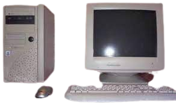

Je suis étudiant à l'IUT de COLMAR (première année), dans le département Réseaux et télécommunications.
J'ai été au collège de l'Assomption à Colmar, avec le brevet mention bien. Puis au lycée Bartholdi de Colmar, avec spécialités Sciences économiques et sociales, et Mathématiques. J'ai obtenu le baccalauréat avec mention bien.
J'ai toujours été passionné par l'informatique, ce pourquoi j'ai choisi cette école, axée sur les réseaux et télécommunications. Le domaine informatique dans laquelle je suis m'importe peu. A partir du moment où je travaille derrière un ordinateur, je suis heureux.
Je suis de nationnalité Franco-Américaine, Colmarien et Texan (Houston).
Pourquoi cette formation?

Depuis petit, j'ai touché de près ou de loin aux ordinateurs.
J'ai donc grandi avec l'informatique, et été bercé avec, comme la plupart des enfants nés dans les années 2000.
Cependant, ma plus grande inspiration est mon grand frère. Lorsque je n'avais que 10 ans, il finissait déjà le lycée, mais il savait tout sur les ordinateurs. Aujourd'hui il travaille en cybersécurité pour une entreprise américaine. En validant des certifications, il a su se créer un profil intéressant pour les employeurs.
Mon grand savait faire des choses que je ne comprenais pas, mais qui m'impressionait. Il m'aidait quand j'avais des problèmes sur le PC familiale. Désormais, je me sens à l'aise en informatique, parce que j'ai connu ça depuis longtemps.
Ce pourquoi j'ai décidé que j'allais travaillé dans ce domaine, qui me passionne et que je connais. Je veux apprendre plus de chose, développer mes connaissances dans différents sujets de l'informatiques.
Pour être honnête, les réseaux et télécommunications ne m'intéresse pas plus que le développement, l'intelligence artificielle ou encore la blockchain. Cela m'est égal, mais il faut bien faire un choix. Je ne regrette pas ma décision, il y a un vaste horizon d'inconnu et de chose à découvrir dans ce domaine. En l'espace de si peu, depuis septembre, j'ai tant appris que je ne peux le décrire. Je m'en voit épanoui.